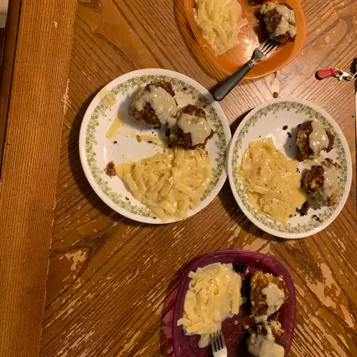

Best Easy Chicken Croquettes
Rating: 4.3 | 180 Reviews | 22 photos
I made these chicken croquettes as a surprise for my mom on Mother's Day. She used to get chicken croquettes at a fancy restaurant when she was a young woman. She loved them!
Ingredients
- 1 ½ cups finely chopped, cooked chicken meat
- 1 (10.5 ounce) can condensed cream of chicken soup, divided
- ¼ cup Italian-style dry bread crumbs
- 2 tablespoons minced celery
- 1 tablespoon minced onion
- ¼ teaspoon poultry seasoning
- ½ cup Italian-style dry bread crumbs, for rolling
- 1 tablespoon butter
- ½ cup milk
- ⅛ tablespoon poultry seasoning
Directions
- Combine chicken, 1/3 cup of condensed soup, bread crumbs, celery, onion, and 1/4 teaspoon poultry seasoning in large bowl; mix well and shape into 6 croquettes (or patties). Chill in the refrigerator for about 1 hour.
- Roll croquettes in additional bread crumbs. Melt butter in a large skillet over medium heat; add croquettes and cook until golden and browned, about 3 to 4 minutes per side.
- Meanwhile, combine remaining condensed soup, milk, and 1/8 tablespoon poultry seasoning in a small saucepan over low heat; cook, stirring occasionally, until warmed through. Serve sauce over croquettes.